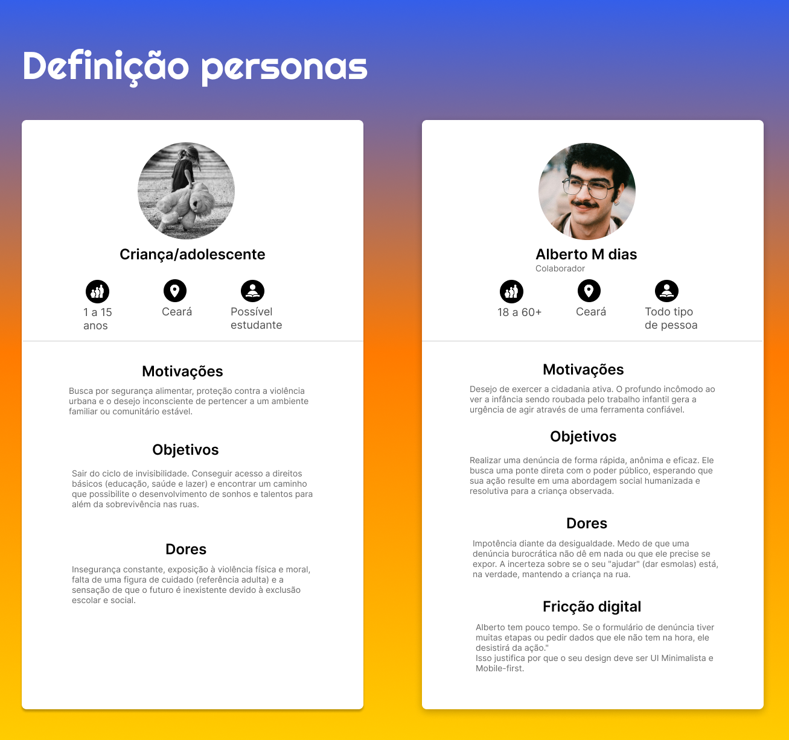
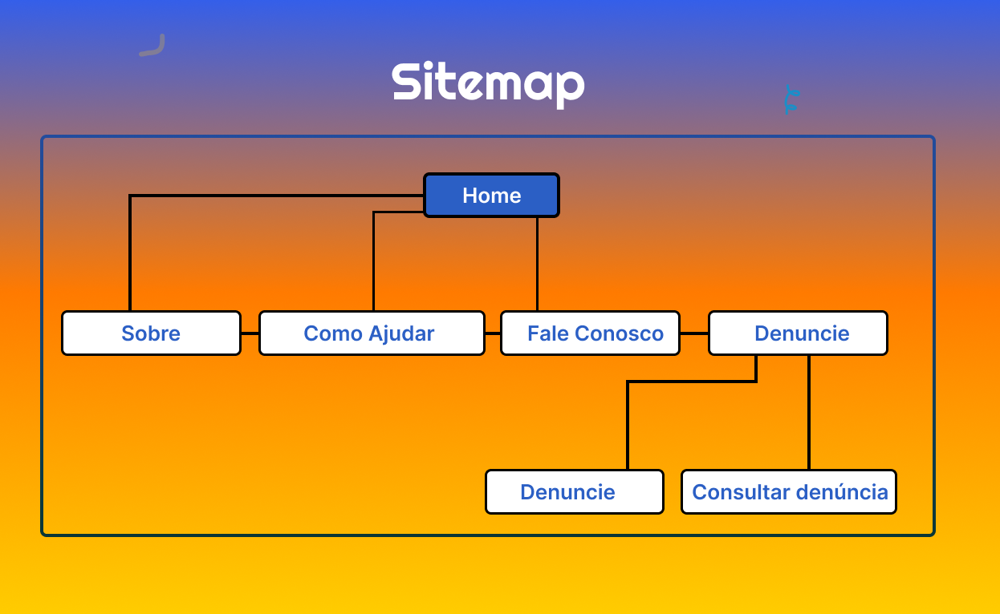
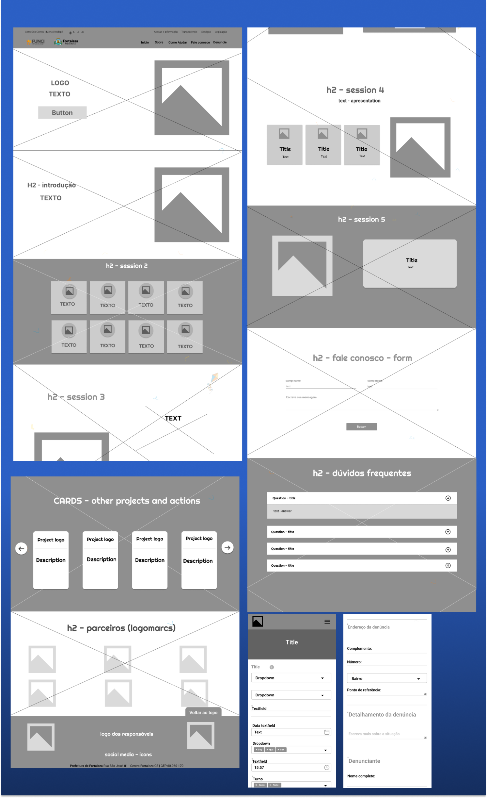
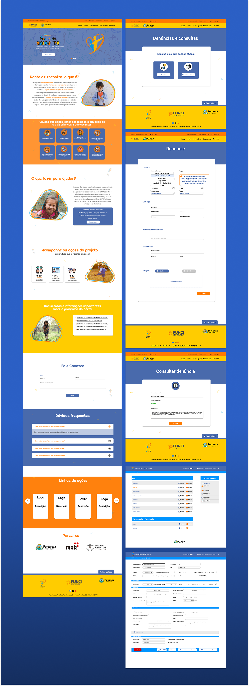
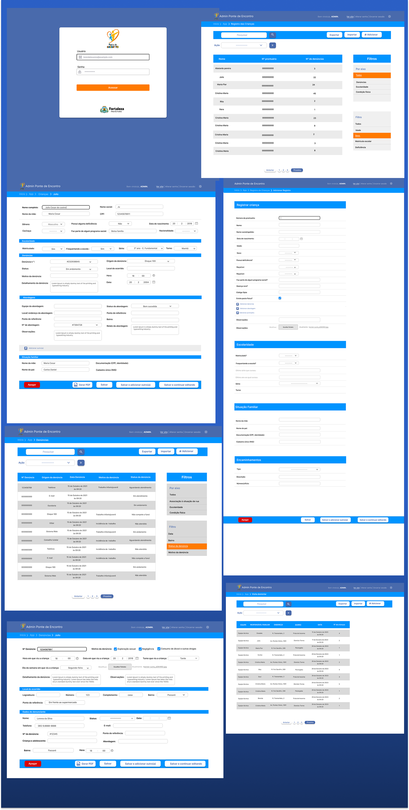
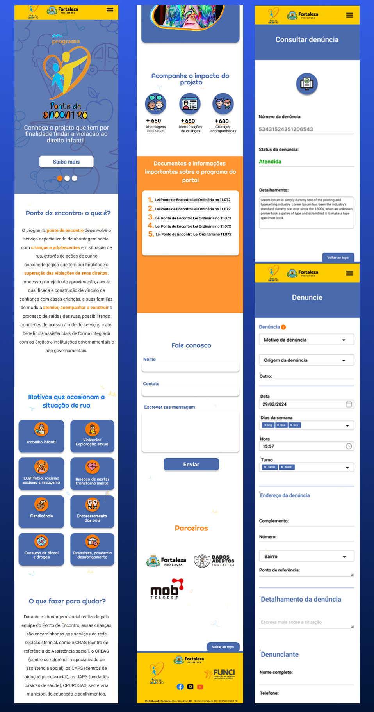
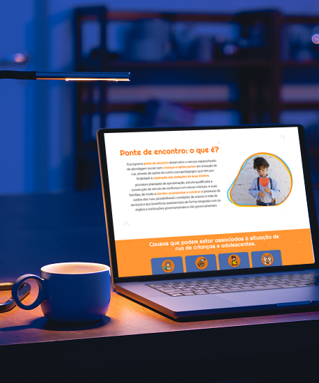
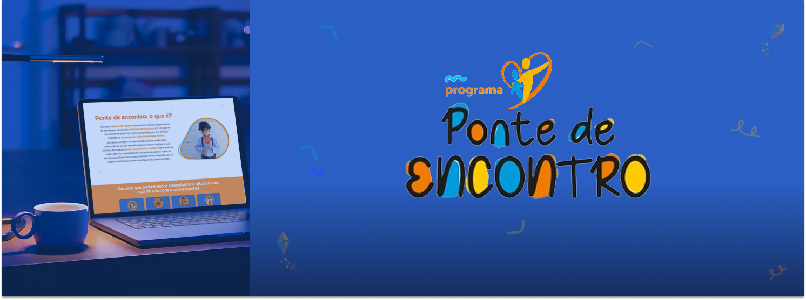

.png)
O Ponte de Encontro é uma plataforma vital desenvolvida para a FUNCI (Fundação da Criança e da Família Cidadã) em parceria com a Citinova. O projeto centraliza o serviço especializado de abordagem social em Fortaleza, facilitando a identificação e o acolhimento de crianças e adolescentes em situação de vulnerabilidade. Como minha primeira experiência liderando um projeto, coordenei todo o ciclo de desenvolvimento, desde a escuta ativa das necessidades da FUNCI até a entrega técnica de um sistema que atua como ponte direta entre o cidadão e a rede socioassistencial.
FUNCI
Fortaleza, CE - BRA
Project Lead & Front-end Developer
O maior desafio foi a simplificação da complexidade. Projetos governamentais costumam ter requisitos densos e burocráticos. Minha missão foi traduzir essas necessidades em uma interface que estimulasse a ação do cidadão. Sabemos que a população evita plataformas complexas, especialmente para ações sociais. Por isso, o foco técnico foi remover qualquer barreira cognitiva, garantindo que o ato de denunciar ou pedir ajuda fosse rápido, intuitivo e acessível para qualquer nível de letramento digital.
Entregamos um ecossistema completo focado em agilidade e transparência: um portal de denúncias mobile-first com fluxos simplificados, uma ferramenta de consulta de protocolos em tempo real e um Painel Administrativo robusto para a gestão das equipes volantes. Desenvolvi fluxogramas de processos que garantiram que, do clique inicial ao atendimento da criança, não houvesse gargalos de informação, transformando o sistema em uma ferramenta de trabalho ágil para os educadores sociais.
Construí uma interface baseada no objetivo de não ter fricções ou curvas de aprendizado. Utilizei uma paleta de cores acolhedora e tipografia legível para passar segurança e seriedade. Cada elemento de UI foi validado para garantir rapidez na inserção de dados. O design aqui não é apenas estética, mas essencialmente funcional para um sistema com uso intuitivo. A arquitetura foi pensada para que o usuário sinta que 'fazer o bem é fácil', utilizando componentes táteis e formulários inteligentes que reduzem o tempo de preenchimento.
Neste projeto, atuei intensamente no desenvolvimento técnico, utilizando um stack moderno composto por Node.js, Webpack e SCSS para garantir um front-end performático e modularizado. A estrutura foi construída sobre o Bootstrap para assegurar responsividade total, já que a maioria das interações ocorre via mobile nas ruas. No back-end, utilizamos Django, o que nos permitiu criar uma interface administrativa (Admin) customizada para a FUNCI, facilitando o gerenciamento de dados complexos com a segurança que um projeto público exige.
.png)
Aumento na Agilidade de Denúncia. Ao projetar uma interface mobile-first focada em baixa fricção, reduzimos o tempo médio de preenchimento do formulário de denúncia. Isso permitiu que cidadãos realizassem o reporte em segundos, garantindo que a equipe volante recebesse os dados em tempo real e agisse com maior precisão geográfica.
+680 Identificações Realizadas.O sistema atuou como um facilitador técnico para o registro de crianças e adolescentes acompanhados. A clareza visual e a facilidade de consulta de protocolos geraram uma maior confiança da população no canal oficial, resultando em um aumento direto no número de acolhimentos e atendimentos sociais documentados.
Democratização da Informação. Além da ferramenta de denúncia, o portal tornou-se um hub de consulta de direitos. Registramos um alto volume de acessos às seções informativas sobre o Estatuto da Criança e do Adolescente (ECA) e leis municipais, educando a população sobre as condições que configuram violação de direitos.
Fim do Gap de Dados. A migração do processo manual para o sistema administrativo (Django Admin) que desenvolvemos permitiu a rastreabilidade total de cada caso. Agora, a FUNCI possui métricas reais para planejar políticas públicas baseadas em locais de maior incidência e tipos de ocorrência mais frequentes.
Projetar o lado administrativo para os educadores sociais foi tão vital quanto o portal público. Criar dashboards simples para quem está no campo de batalha é o que realmente faz a operação ser sustentável.
Aprendi que, em projetos sociais, o design serve para construir uma ponte de confiança entre o cidadão e o governo, e liderar este projeto me ensinou a gerenciar expectativas de stakeholders públicos e a garantir um bom e adequado desenvolvimento.
Para projetar o Ponte de Encontro, foi necessário olhar para duas realidades distintas. De um lado, a criança e o adolescente, o beneficiário final que vive em um ciclo de invisibilidade e privação de direitos. Do outro, o cidadão ativo, representado pelo Alberto, que sente o incômodo social, mas muitas vezes não age por medo da burocracia.
O mapeamento destas personas revelou que o sucesso do projeto dependia de remover a fricção exacerbada e curva de aprendizados do sistema. Alberto precisa de um gatilho de denúncia instantâneo e seguro para que a criança deixe de ser invisível. O design foi concebido para ser o elo mais curto e humano possível entre a vontade de ajudar e a ação do poder público.

Para um projeto de abordagem social, a arquitetura de informação deve ser o caminho mais curto entre a percepção de uma violação e a ação protetiva. Projetei uma estrutura enxuta e intuitiva, eliminando ruídos para que o cidadão possa agir no momento exato da necessidade.

Na etapa de wireframes de média fidelidade, meu foco como Lead do Projeto foi a remoção de barreiras cognitivas. Projetar para o serviço social exige que o cidadão não precise gastar energia pensando "como usar", mas sim focar na ação de ajudar. Estruturei a hierarquia de informações priorizando o fluxo de denúncia e consulta, validando a disposição dos elementos antes da aplicação da identidade visual. O foco técnico esteve em:

O desafio visual do Ponte de Encontro foi equilibrar a seriedade de um serviço público com a sensibilidade exigida pelos direitos humanos. Projetei um Style Guide focado em alta visibilidade e acolhimento, garantindo que a interface fosse, ao mesmo tempo, um alerta para a sociedade e um porto seguro para quem busca ajuda.

A etapa de alta fidelidade traduziu o compromisso social do Ponte de Encontro em uma interface de alto impacto e baixa fricção. Utilizei o Design System para garantir que a navegação fosse acolhedora, mas extremamente funcional. O foco principal foi a hierarquia visual: o botão de denúncia e as informações sobre direitos infantis ganharam destaque imediato, guiando o cidadão de forma linear. Implementamos ferramentas de acessibilidade nativas e uma arquitetura de informação que organiza desde a conscientização até o monitoramento administrativo via Django.
Wireframes - desktop (Website)

Wireframes - desktop (Admin)

Como a maioria das interações de denúncia ocorre em trânsito, a versão mobile foi o coração do projeto. Foquei em um design altamente tátil e responsivo, otimizando formulários densos para preenchimento rápido. O objetivo técnico foi reduzir o tempo de interação para que o relato de violação de direitos ocorra no momento exato da observação. O resultado é uma ferramenta leve, performática e inclusiva, garantindo que a tecnologia atue como um facilitador imediato de proteção social na palma da mão.
Adaptamos a densidade de informações para evitar sobrecarga em telas menores, garantindo que o fluxo de inscrição e os conteúdos de educação permaneçam fluidos e acessíveis em qualquer dispositivo. O resultado é uma interface moderna, leve e tecnicamente escalável, pronta para proporcionar um handoff sem atritos para o desenvolvimento.


.png)
.png)

.png)
.png)
.png)